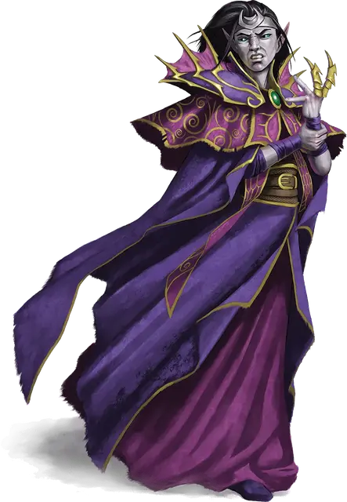

Носящий пурпур Неронвейн
Neronvain
Средний Гуманоид (Эльф), нейтрально-злой, именной НИП

Класс Доспеха 17
Хиты 117 (18к8 + 36)
Скорость 30 футов
| мод | спас | ||
|---|---|---|---|
| СИЛ | 8 | −1 | −1 |
| ЛОВ | 17 | +3 | +3 |
| ТЕЛ | 15 | +2 | +6 |
| мод | спас | ||
|---|---|---|---|
| ИНТ | 16 | +3 | +3 |
| МДР | 13 | +1 | +5 |
| ХАР | 18 | +4 | +4 |
Навыки Восприятие +5, Магия +7
Иммунитет к урону яд
Иммунитет к состояниям отравление, очарование, испуг
Чувства тёмное зрение 60 футов, пассивное Восприятие 15
Языки Общий, Драконий, Инфернальный, Эльфийский
Опасность 9 (5000 опыта)
Бонус мастерства +4
Особенности
Драконье величие. . Неронвейн добавляет свой модификатор Харизмы к КД (включено в статистику).
Наследие фей. . Неронвейна невозможно магически усыпить.
Действия
Мультиатака. . Неронвейн совершает две атаки, либо своим коротким мечём, либо мистической стрелой.
Короткий меч. . Рукопашная атака оружием: +7 к попаданию, досягаемость 5 футов, одна цель. Попадание: 6 (1к6+3) колющего урона плюс 13 (3к8) урона ядом.
Мистическая стрела. . Дальнобойная атака заклинанием: +7 к попаданию, дистанция 120 футов, одна цель. Попадание: 11 (2к10) урона силовым полем плюс 9 (2к8) урона ядом.
Ядовитое облако (2 / день). . Ядовитый газ заполняет сферу радиусом 20-футов с центром в точке в пределах 50 футов от Неронвейна, которую он может видеть. Газ распространяется за углы и держится до начала следующего хода Неронвейна. Каждое существо, начинающее свой ход в сфере газа должно преуспеть в спасброске Телосложения Сл 16 или стать отравленным на 1 минуту. Существо может повторять спасбросок в конце каждого своего хода, при успехе снимая с себя этот эффект.